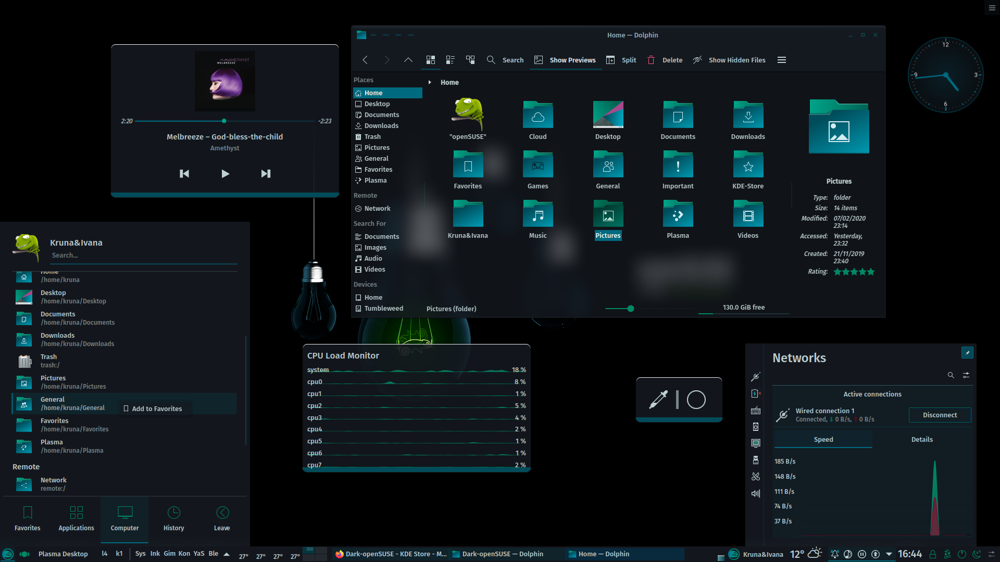

Introduction Last updated: 2022-06-01
Linux is a community of open-source Unix like operating systems that are based on the Linux Kernel. It is a free and open-source operating system and the source code can be modified and distributed to anyone commercially or noncommercially under the GNU General Public License
What is suse Linux?
SUSE Linux is an increasingly popular Linux distribution that competes head- on with Red Hat’s Linux versions. SUSE Linux’s fortunes have been on the rise following Novell’s acquisition of Germany’s SUSE Linux AG and the recent initiation of the openSUSE project (www.opensuse.org) — an open source project, sponsored by Novell, in which a community of developers, end users, and other open source enthusiasts can participate and continue to evolve SUSE Linux. The recent migration to the openSUSE community-based development model has generated a distinct “buzz” around SUSE Linux as the up-and-coming Linux distribution for everyone from home users to enterprise servers.
A significant factor in SUSE Linux’s increasing popularity is that unlike its competitor Red Hat’s singular focus on the enterprise market, Novell continues to address both the enterprise market and Linux enthusiasts. Specifically, the SUSE Linux open source software (OSS) is aimed at small-office/home-office users as well as those wishing to experiment with the SUSE Linux as their desktop system. The commercial version of SUSE Linux is sold as a boxed set through distributors as well as online stores. SUSE Linux is a complete Linux distribution, suitable for small office/home office or even an enterprise. This book includes a DVD with SUSE Linux 10 OSS, with everything you need to use it as a personal desktop system.
If you are starting out with SUSE Linux, you need a beginner’s guide that not only gets you going with the installation and setup of SUSE Linux, but also shows you how to use all the tools that come with your desktop. That’s why I wrote SUSE Linux 10 For Dummies in plain English, using a breezy style, that quickly gets to the step-by-step instructions for accomplishing a task, be it installing a printer or crafting a memo with OpenOffice.org Writer. My goal is to minimize confusion and keep things as simple as possible. I present the essential steps for specific tasks, but avoid inundating you with too many details.
Suse Linux Features
It is based on enterprise-class SUSE Linux and made in Germany, so it is very stable.
Gorgeous KDE desktop, known in the industry as "the most gorgeous Linux distribution"
Installation images provide multiple desktop environments.
Package management (YaST) tends to be graphical management, and the graphical interface is more user-friendly.
Multi-language support: Although penetration tools tend to be written in English, we have ensured that Kali includes true multilingual support, allowing more users to operate in their native language and locate the tools they need for the job.
Should I Use suse Linux?
As an operating system, SUSE Linux acts as the intermediary through which you, the “lord of the system,” control all the hardware and software in your PC. The hardware includes the system box, the monitor, the keyboard, the mouse, and anything else connected to the system box. The catchall term peripheral refers to any equipment attached to the system. If you use a laptop computer, all your hardware is packaged into the laptop.
Inside that system box is the system’s brain — the microprocessor (Intel Pentium 4, for example) or the central processing unit (CPU) — that performs the instructions contained in a computer program. When the microprocessor is running a computer program, that program’s instructions are stored in the memory or RAM. RAM stands for Random Access Memory (that means any part of the memory can be accessed randomly — in arbitrary order).
The system box has another crucial component — the hard drive (or hard disk, as it is sometimes called). The hard drive is the permanent storage space for computer programs and data. It’s permanent in the sense that the contents don’t disappear when you power off the PC. The hard drive is organized into files, which are in turn organized in a hierarchical fashion into directories and subdirectories (somewhat like organizing papers in folders inside the drawers of a file cabinet).
To keep a Linux system running properly, you or someone else has to make sure that the hardware is working properly and that the files are backed up regularly.
There is also the matter of security — making sure that only legitimate people can access and use the system. These tasks are called system administration.
If you are using SUSE Linux at a big facility with many computers, a full-time system administrator probably takes care of all system administration tasks. On the other hand, if you are running SUSE Linux on a home PC, you are the system administrator. Don’t let the thought frighten you. You don’t have to know any magic incantations or prepare cryptic configuration files to be a system administrator.
SUSE Linux includes a graphical configuration and setup tool called YaST that makes system administration a “point-and-click” job, just like running any other application. Incidentally, you first encounter YaST when you install SUSE Linux following the directions in Chapter 2.
Getting Started with SUSE Linux
Based on my personal experience in learning new subjects, I recommend a three-step process to get started with SUSE Linux:
1. Install and configure SUSE Linux on your PC.
2. Explore SUSE Linux — the GUI desktop and the applications.
3. Use SUSE Linux for your day-to-day work.
In the following sections, I explain this prescription a bit more
Install and configure SUSE Linux
Your PC probably came with some flavor of Microsoft Windows. So the first step is to get SUSE Linux onto your PC. This book comes with SUSE Linux — all you have to do is follow the instructions in Chapter 2 to install it.
Just to pique your curiosity, you can keep both Windows and SUSE Linux on the PC; the SUSE Linux installer can split up the space on the hard drive into two parts — one part for Windows and the other for installing SUSE Linux. During the SUSE Linux installation, you configure many items — from the network card (if any) to the X Window System.
As you’ll find out for yourself, SUSE Linux installation is very easy, especially with the graphical YaST installer.
After you install SUSE Linux, you can configure individual system components (for example, the printer) and tweak any needed settings that aren’t configured during
You also can configure your GUI desktop of choice — GNOME or KDE. Each has configuration tools. You can use these tools to adjust the look and feel of the desktop (background, fonts, screen saver, and even the entire color scheme).
After you’re through with the configuration step, all the hardware on your system and the applications should run to your liking.
Explore SUSE Linux
With a properly configured SUSE Linux PC at your disposal, you can start exploring SUSE Linux. You can begin the exploration from the GUI desktop that you get after logging in.
Explore the GUI desktops — GNOME and KDE — and the folders and files that make up the Linux file system. You can also try out the applications from the desktop. SUSE Linux comes with office and multimedia applications and databases that you can begin using.
Also try out the shell — open up a terminal window and type some Linux commands in that window. You can also explore the text editors that work in text mode. Knowing how to edit text files without the GUI is a good idea. At least you won’t be helpless if the GUI is unavailable for some reason.
Use SUSE Linux
After you explore the SUSE Linux landscape and know what is what, you can then start using SUSE Linux for your day-to-day work — browsing the Web, using Office applications such as a word processor and spreadsheet, listen to music, burn a music CD, and anything else you want
Of course, you can expect to become increasingly proficient in SUSE Linux as time goes on. After all, learning is a lifelong journey.
Bon voyage!
Discovering the Common Features of the Desktops
From your perspective as a user, both KDE and GNOME probably seem similar because many features work similarly. Becoming familiar with these common features is helpful so that you can rely on them no matter which desktop you choose to use for your daily work.
For starters, the initial desktop for both KDE and GNOME looks like any other popular GUI desktop, such as Microsoft Windows or Apple’s Mac OS desktop. For example, Figure 5-1 and Figure 5-2, respectively, show typical KDE and GNOME desktops.
Both desktops (Figures 5-1 and 5-2) show icons for your computer, your home folder, and the trash can for deleted files. Both desktops have something similar to the Windows taskbar. On the KDE desktop, the taskbar, called the panel, appears along the bottom of the screen. GNOME has two such panels — one on the top and the other on the bottom of the screen. Even though the appearance may look slightly different, the panels serve the same purpose on both KDE and GNOME desktops — they provide buttons for accessing menus and starting applications, and they show buttons for any applications you’ve started (or were automatically started for you)
In the case of the KDE desktop, both the menu buttons and information about running applications appear on the same panel. On the GNOME desktop, the top panel provides menus and buttons for starting applications, whereas the bottom panel displays information about running applications.
Move the mouse over any icon on a panel, and a small pop-up window gives a helpful hint about what you can do with that icon.
Video Tutorial and Practice
watch suse linux online tutorial free on youtube